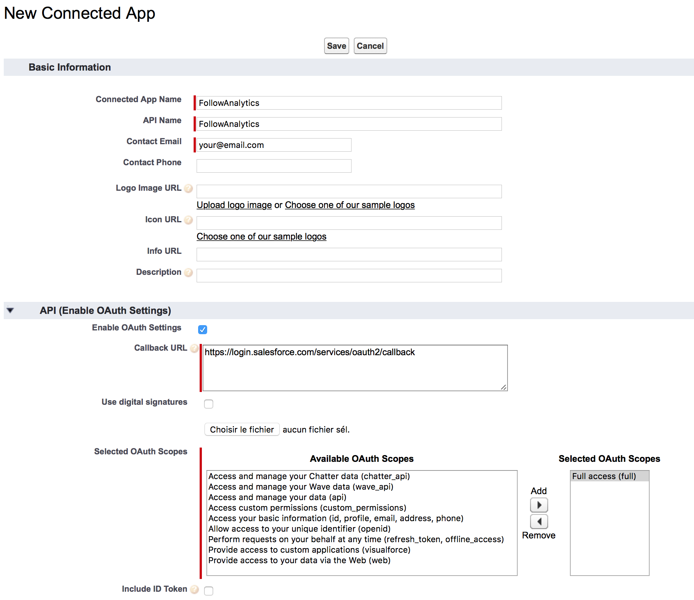
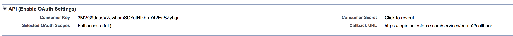
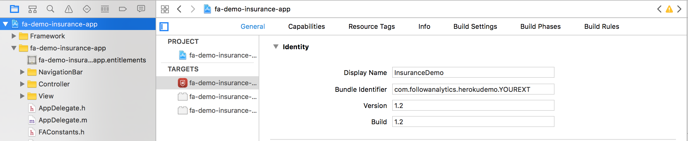

Setup the demo
At the end of this step-by-step setup process, you will have:
- The FollowAnalytics Salesforce App configured on a Salesforce developer instance
- The Heroku demo app deployed and ready
- An account on FollowAnalytics through the FollowAnalytics Heroku Add-on
- The Insurance demo app installed on a mobile device
1. Install the FollowAnalytics Salesforce app
1.1. Deploy the app on Salesforce
You should use a developer instance. If you need one, sign up for it here.
Install the FollowAnalytics package by clicking the link below. If you use multiple Salesforce orgs, make sure you select the developer instance to connect this demo.

You can leave options to their default values.
1.2. Create an OAuth app for FollowAnalytics to send data
FollowAnalytics requires you to declare an OAuth app on Salesforce, which will allow the sending of data through Salesforce APIs.
In your Salesforce demo instance:
- Click on your name in the Salesforce page top-right corner, then Setup
- In the menu to the left, under App Setup, select Create > Apps
- In Connected Apps, click on New
- Give an app and API name, for instance "FollowAnalytics", and put your contact e-mail.
- Click on Enable OAuth Settings, enter any URL (for instance
https://login.salesforce.com/services/oauth2/callback), and give the Full Access (full) OAuth scope.
The form should look like this:  - Click Save
You should be redirected to the app you just created. In this screen, copy the Consumer Key and Consumer Secret and keep them at hand for the next step.
2. Deploy the Heroku app and configure it
2.1. Deploy
Deploy the demo web app to a new heroku app by clicking the Deploy button below.

This app will automatically bundle the FollowAnalytics add-on, thus creating an account on it for you. Even though the add-on test plan is free, you will need to have configured a credit card on your Heroku account to deploy this app.
When deploying the code, you will be asked for 5 values, as config variables:
- your Salesforce credentials, to ensure the connection between the various systems can be achieved. You need to provide all three fields.
To get your Salesforce token, navigate to Salesforce and go to your settings: [name] —> My settings —> Personal —> reset my security token. You will receive the token by email. - the consumer key and secret obtained in step 1.2 above.
You can leave the name blank, or give it one you choose. The name generated to the app will determine the URL to access your app once it's deployed: http://APPNAME.herokuapp.com
For slightly faster page loading, you can choose to deploy the app in Europe instead of the default United States option.
Once you click Deploy, the app is set up. You can now access your FollowAnalytics account by going to your app in your Heroku console and clicking on the FollowAnalytics addon.
2.2. Configure FollowAnalytics for the demo
The Heroku app you just deployed is autonomous. You only need to click one button to get the required objects created in FollowAnalytics.
Go to http://YOURAPPNAME.herokuapp.com or click on the Open App button located in the top-right corner of the Heroku app detail page in your Heroku Dashboard.
Here, click on the big Create app now button. When the page reloads, you get a package name and API key that you will use in the next step.
If you wish to be able to send push notifications from this page, you will need to provide a valid push certificate matching the package name given in the Mobile app details table.
To generate your push certificate, please follow the procedure described in our developer portal
3. Download and build the iOS mobile app
To enable push notifications on the test app, you will need an Apple Developer Account, which costs 99USD per year. Without it, you can still use the app on a device and get that data into Salesforce.
- Download the iOS app code from Github
- On a Mac computer, open the project in Xcode by double-clicking on the
fa-demo-insurance-app.xcodeprojfile - Go to the Heroku app you deployed (
APPNAME.herokuapp.com) and copy the mobile app package name.
In Xcode, go to the project settings by clicking fa-demo-insurance-app in the left pane, and change the bundle identifier to the package name you copied.
 - Open the
FAConstants.mfile by searching it using the⌘ + ⇧ + Oshortcut or by browsing in the left pane (the file is in the fa-demo-insurance-app folder). Take the API key given on the home page of the Heroku app you deployed, and use it as value for theFAInsuranceSDKAPIKeyconstant. For instance, the keyABCD1234would give the following line:NSString *const FAInsuranceSDKAPIKey = @"ABCD1234";
Don't forget to keep the@sign in front of the opening double quote. - Build the project (Product > Build) to ensure everything is properly configured. It should run without error.
- Connect an iPhone to your computer, and Run the app on it. Please follow these instructions to know how to run the app on your device.
- Should you wish to be able to send push notifications to the app, you will need to enroll to the Apple Developer Program (or use an existing Apple ID already enrolled). Follow these instructions to produce the certificate needed to send push notifications, and add it to FollowAnalytics through the Heroku demo app.
You're all set!
You can now proceed to the Walkthrough section of this site to see how to use what you just set up.